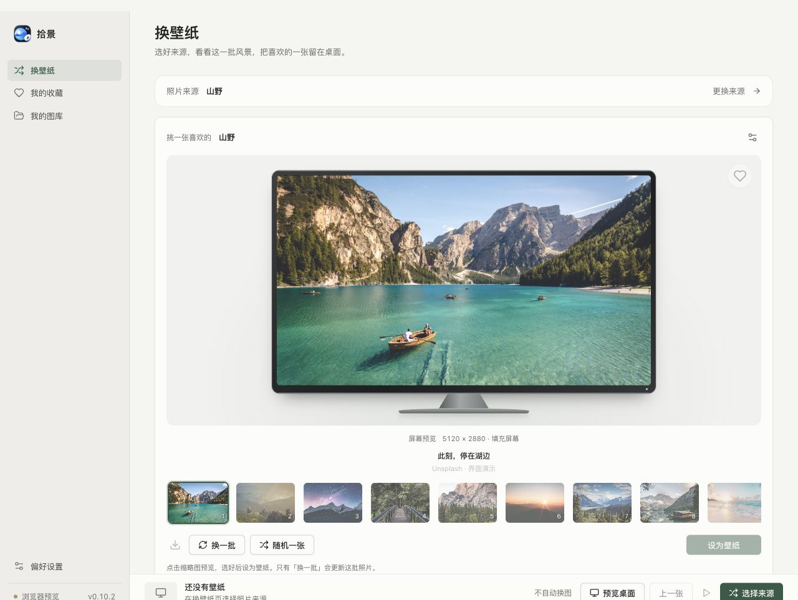
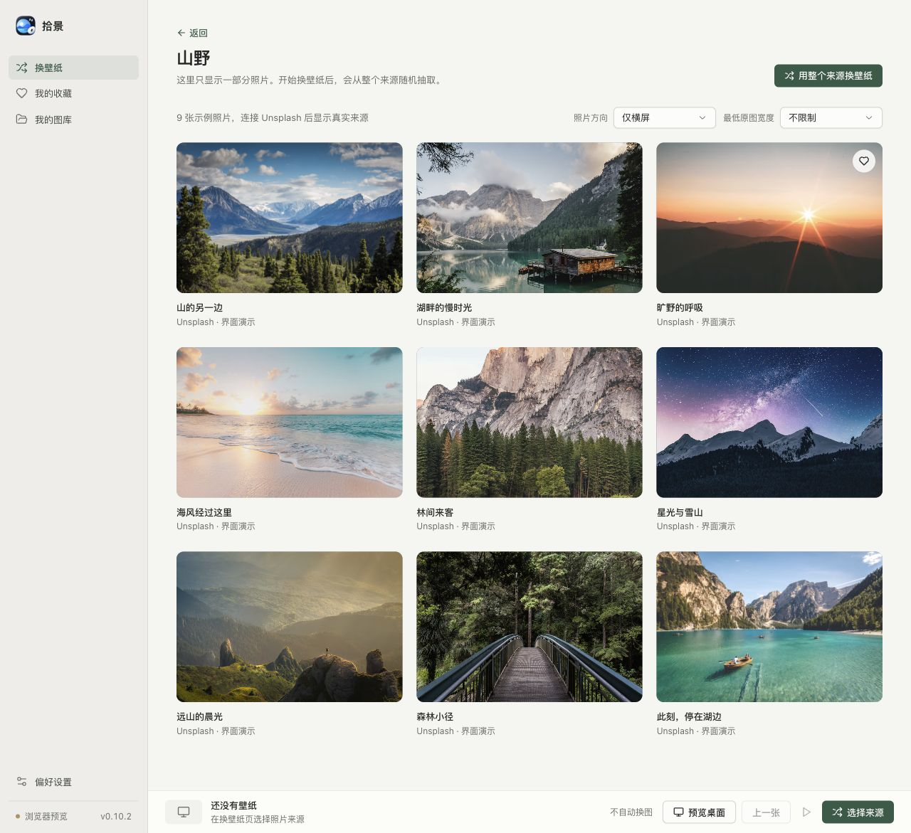
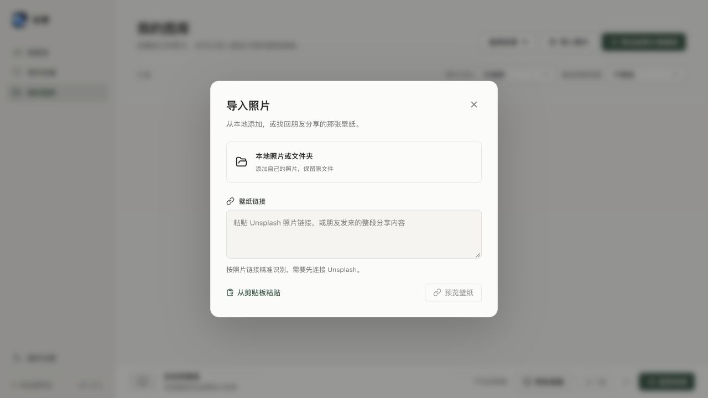
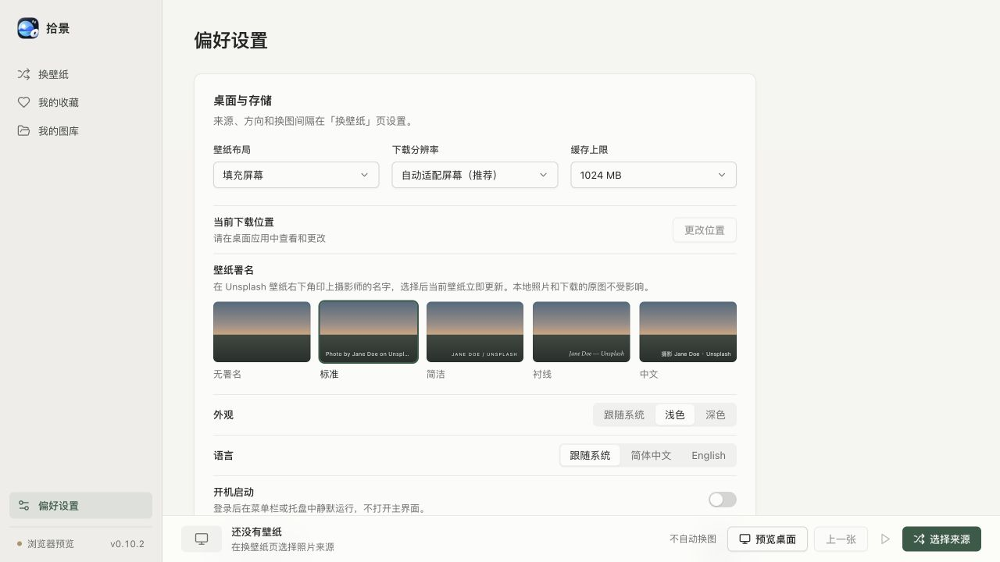
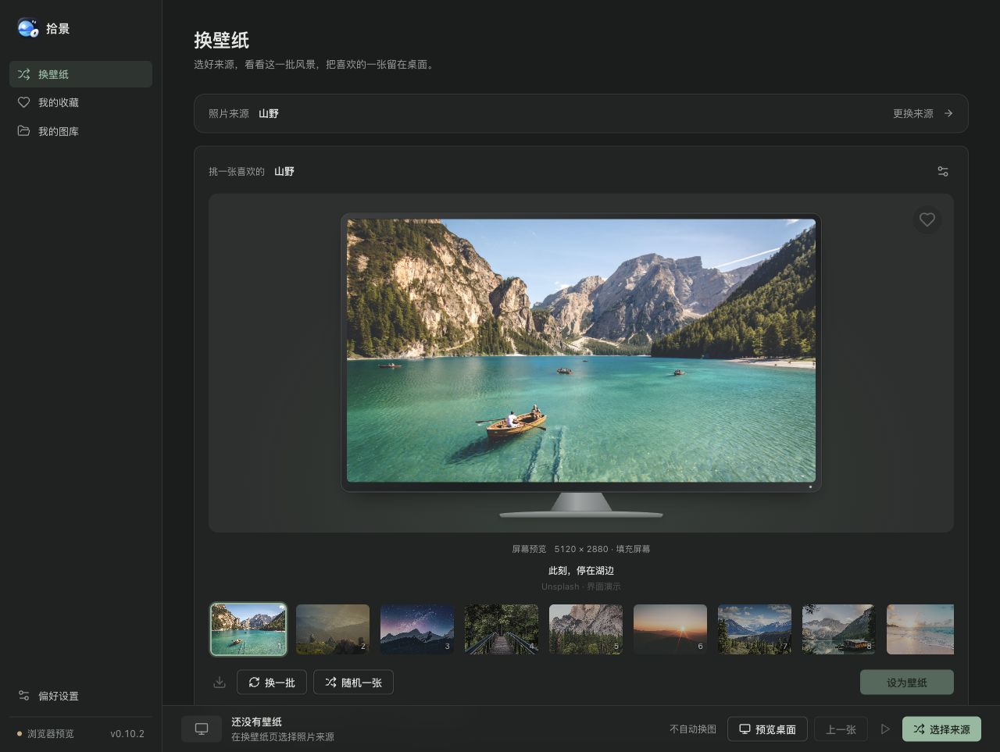

把风景放进屏幕里。
最多 12 张候选，按主屏幕比例预览。换一批、随机选一张，确认「设为壁纸」才应用。
先看一批，再选一张。
把自己的照片与喜欢的风景，
留在每天打开的桌面上。

挑一张喜欢的，或让风景按时轮换。
关上窗口，拾景也能安静地继续。
最多 12 张候选，按主屏幕比例预览。换一批、随机选一张，确认「设为壁纸」才应用。
本地照片与文件夹直接导入，保留原文件。支持重新扫描、修复失效路径与大图库浏览。
作者、分类、官方主题或 Unsplash Collection。筛选方向与最低宽度，高清壁纸按需下载。
每小时、每天、自定义 1–10080 分钟，也可不自动换。随时暂停，或回到上一张。
复制 Unsplash 壁纸链接，对方预览确认后导入图库。分享内容直接粘贴，也能找到同一张照片。
菜单栏 / 托盘同步选图，开机静默运行。自动适配清晰度、可选摄影师署名，Windows 可同步锁屏。
点开截图，看看界面的每个细节。

按方向和最低宽度筛选，点开大图查看细节。收藏成为自己的精选来源，本地照片与导入壁纸则留在「我的图库」。
了解浏览与收藏 →
一个入口，添加本地照片或预览分享链接。导入后保留在图库，不会自动更换桌面。

四种摄影师署名样式与无署名选项，自动适配屏幕清晰度。原图保持原样。
浅色、深色或跟随系统，照片始终是主角。界面、菜单栏与系统提示支持简体中文和 English。

截图更新于 2026-10-10，来自 v0.10.2 浏览器预览与内置示例照片；示例尺寸不代表在线照片元数据。示例中的桌面操作按钮禁用，真实壁纸设置、后台轮换与系统功能请使用桌面客户端。
打开「我的图库 → 导入照片」，选择「本地照片或文件夹」。无需账号或 Key。
回到「换壁纸」，选「我的图库」并保存。点缩略图预览，确认后设为壁纸。
设置间隔，在底栏继续自动换图；也可以选择「不自动换」，一直保留当前照片。
想使用在线来源？连接自己的 Unsplash Access Key 后，可选择作者、分类或 Collection。在线功能需遵守 Unsplash 用途规则 ↗
Windows 10/11 · x64 / ARM64
macOS · Intel / Apple Silicon
安装版适合日常使用；也提供 ZIP 归档。
选择与你的系统和芯片对应的版本。
下载信息来自官方 GitHub Releases。
Windows 安装版下载更新后，由你确认重启安装。Mac 与 Windows 便携版支持应用内下载并校验，再手动替换安装。
可以，直接导入本地照片即可。导入不会移动或修改原文件；之后请保留文件位置。在线照片的收藏记录不等于已下载原图，稳定离线使用建议选择本地照片。
默认关闭窗口后留在菜单栏 / 托盘，已开启的轮换继续运行。左键打开选图面板，右键可暂停、继续或退出。开启自启动后，登录时静默运行；选择「退出」会停止轮换。
Windows 可在偏好设置开启「同步到锁屏」，新安装默认开启；锁屏失败会单独提示，桌面与轮换仍然有效。Windows 聚焦或系统策略可能影响显示。macOS 不提供锁屏同步，暂不支持多屏独立壁纸或视频壁纸。
当前安装包未签名，Mac 包也未做 Apple 公证。确认来自本项目官方 Releases 后，可在「系统设置 → 隐私与安全性」按系统提示选择「仍要打开」。应用内更新不会消除系统验证提示。
提供 Windows x64 / ARM64、macOS Intel / Apple Silicon 构建，不提供 Windows 7/8、32 位或 Linux 安装包。Windows x64 桌面壁纸已有验证；ARM64、macOS 壁纸与权限、Windows 锁屏完整兼容性仍需实机验收。
Unsplash API Guidelines 将壁纸应用列入限制用途，并限制要求用户自行注册开发者账户的公开应用。个人 Key 不等于用途授权；公开发行或推广在线模式前需与服务方确认许可。本地照片模式不依赖 API。了解详情 ↗